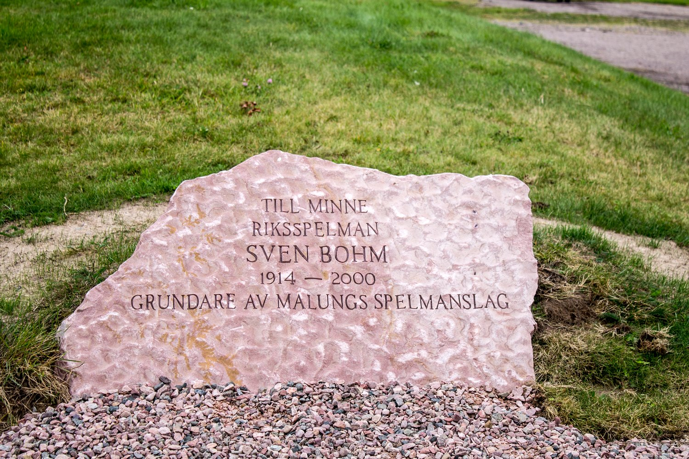

Historik
Föreningens historia
Malungs Hembygdsförening bildades 1919. Försök gjordes att köpa en äldre komplett gård. Då detta misslyckades inriktades arbetet på att finna en lämplig plats att anlägga en hembygdsgård på. År 1922 förvärvades en del mark i byn Holarna på den s.k. Hundholen. Platsen upptogs vid storskiftet som allmänt undantag för grustäkt och området överlämnades som gåva av Malungs kommun och Bergslaget.
Ett omfattande arbete fick läggas ner på att göra i ordning den söndergrävda tomten. Befolkningen i de närmaste byarna och medlemmar i Malungs Idrottsförening samlades kvällstid med spadar, spett och rallkärror för att jämna till marken där husen skulle stå. Tomten utökades 1963 då marken i söder samt den s.k. Klängstugan skänktes av Korsnäsbolaget. Vid samma tidpunkt inköptes mark norrut.
År 1922 uppfördes också de första byggnaderna och 1932 invigdes gården. Målet var att illustrera hur en storbondegård under 1600- och 1700-talen kunde se ut i Malung.
Föreningen har efterhand satt upp flera intressanta hus. En samling byggnader av olika åldrar har satts upp norr om den kringbyggda gården. Dessutom finns i föreningens ägo olika byggnader ute i byarna, såsom skvaltkvarnar, båthus och loftbyggnader. I den omfattande föremålssamlingen finns det mesta av verktyg, redskap, textilier och andra bruksting som användes under självhushållets tid. I Jannesstugan finns dräkt- och textilsamlingar. Välgjorda kopior finns även för utlåning, t.ex. band i olika tekniker, dräktliv, väskor, fyrflätning, broderade vantar och handskar.
Niss Hjalmar Matssons Minnesfond
Niss Hjalmar Matssons Minnesfond förvaltas av Malungs Hembygdsförening, vars styrelse även utdelar premium till personer som "på ett begripligt sätt", ligger helt i Niss Hjalmars anda. All behållning i Niss Hjalmar Matssons Minnesfond går oavkortat till verksamheten i Malungs Hembygdsförening enligt fondens stadgar. De gåvor fonden erhåller utgör ett viktigt bidrag till att kunna förvalta och uppfylla Niss Hjalmars vilja till fromma för Malungs kulturella liv och historia.
Hembygds- och folkminnesvården i Malung, Lima och Transtrand är starkt förknippad med fil.lic. Niss Hjalmar Matssons (1905-1973) namn. Hans stora insatser för forskningen är beskrivna i docent Stig Björklunds nekrolog i Skinnarebygd 1969-73. Efter hans bortgång bildades Niss Hjalmar Matssons minnesfond, med målsättningen att stimulera och främja den fortsatta forskningen om bygdens historia och forntid.
I förordet till första utgåvan av skinnarebygd 1948 skriver han: Skinnarebygd vill i sin mån motverka en tyvärr tendens hos allmänheten att överlåta till examinerade yrkesforskare att syssla med hembygdsforskning. När forskningen helt igenom har blivit vetenskap, ingenting annat än vetenskap och icke längre något folkets sak och intresse, då har någonting mycket betydelsefullt försvunnit ur våra bygders liv.
Minnessten över Sven Bohm
Vid Malungs Hembygdsgård har riksspelmannen Sven Bohm hedrats med en minnessten. Sven Bohm var en förgrundsgestalt i Malungs spelmanslag.
Han grundade Malungs spelmanslag 1948 inför en spelmansstämma, som arrangerades på Malungs Hembygdsgård.